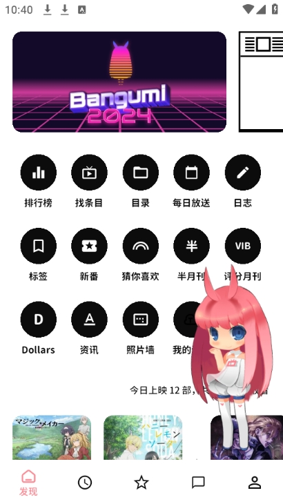
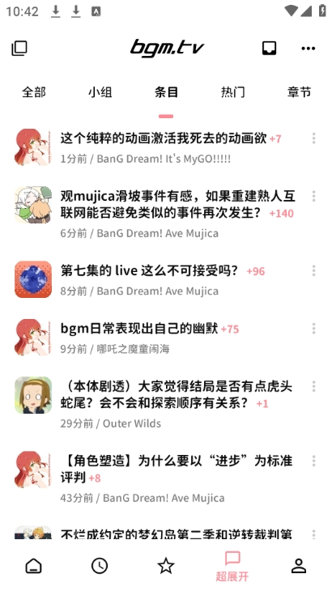

Bangumi 客户端深度盘点：番组计划十年社区，手机端到底做对了什么
从时间胶囊动态流到超展开论坛，从十档评分到个人时光机，系统性盘点 Bangumi 移动客户端的能力边界与社区价值，帮你判断这款软件值不值得装进手机。
bangumi官网的番组计划已经走过了十多年——从一个小众的 ACG 条目数据库，长成了中文互联网最有生命力的动画、漫画、游戏、小说社区之一。但网页端的「记录工具」属性很强，很多人以为它就是个打标签打分的地方。这两年客户端迭代得快，社区的讨论、动态、社交功能大多迁到了手机上，甚至长出了网页端没有的东西。
这篇文章想做一次系统性的盘点：把 Bangumi 客户端的能力面完整铺开，它提供什么、亮点在哪、什么场景真的好用，也不回避短板——毕竟一个装了三年的软件，要说清楚它为什么值得占屏幕的位置，不能只说优点。
能力域一：记录体系——不只是标签，是十年累积的社区标准
Bangumi 最核心的能力还是「记录」，但从官方下载拿到的客户端把这件事做轻了。条目点格子的体验在手机上比网页顺手得多：追番点一下「看到第 N 话」就更新，完结自动归档，想看/在看/看过/搁置/抛弃五档收藏体系从第一天就没变过，但十年下来社区已经形成了高度一致的使用习惯——「搁置」不等于「不想看」，「抛弃」是真弃了，这些语义细节只有在同一个社区里待久了才能体会。
十档评分体系是记录的另一半。社区通用的档位文案——「超神作」「神作」「力荐」「推荐」「还行」「不过不失」——不是官方写死的，是十年来用户反复校准形成的默契。整数制看起来粗糙，但在社区语境里反而让打分决策更快，7 分是分水岭、10 分要克制这些共识，让排行榜的分数真的有参考价值。你给一部番打 8 分，不是给自己贴标签，是在给社区的数据池贡献一个样本。

能力域二：社区动态流——时间胶囊解决了「大家在看什么」
记录是自己的事，但刷到别人的记录才是 Bangumi 客户端真正让人上瘾的地方。时间胶囊页面把全站用户「看过/读过/完成了/标记了」的一切做成了一个实时动态流——这不是微博式的碎碎念，是真实的行为记录：谁刚看完某部番的最后一话、谁给某本小说打了 9 分、谁把某部游戏标记为「搁置」。
顶部分类筛选是关键：刷「全站」是闲逛，看最近大家都在追什么；切「吐槽」是看真实口碑，比条目评论区更即时更生猛；加了好友之后还有好友流，互相监督追番进度的氛围主要在这里。客户端把这个动态流做成了手机上刷起来最舒服的页面之一——每条卡片有封面缩略图，看到感兴趣的直接点进条目详情，信息密度和操作流畅度平衡得不错。
能力域三：讨论场域——超展开是真正的社区论坛
如果说时间胶囊是「大家在做什么」，超展开板块就是「大家在聊什么」。这是全站所有讨论帖的汇集页，名字来自日语「超展開」，意思是剧情展开超出预期——刷起论坛来确实常常有这种感觉。
超展开把讨论分成了几路：小组话题、条目讨论、热门帖子、章节级讨论。追番季新番更新后，章节讨论和对应小组的观感帖会在几小时内起楼，从这里进比蹲守各个小组高效得多。业界新闻、争议话题的第一现场也往往在小组帖里，超展开的「全部」分类就是全站舆论的风向标。
客户端还给超展开加了网页端没有的屏蔽增强——按关键词、分类等规则过滤不想看的帖子，完整配置方法可以翻bangumi文档。重度用户第一周配好这个功能，能把噪音降到很低。

能力域四：个人数据驾驶舱——时光机不止是个人主页
番组计划把个人主页叫「时光机」，这个名字比「我的页面」有温度多了。它聚合了你的收藏总览、进度记录、吐槽评论和标记历史——全部按时间线排列，把自己看番的岁月做成了一条可回放的时间轴。
社区里有个浪漫的用法：每年年初翻一遍自己的时光机，配合年鉴数据（个人年度统计与全站榜单，始于 2010 年，农历新年前后发布），就是现成的年度总结素材。
看别人的主页也有用。评估推荐可信度时，点进安利你番的人的空间，看 TA 的收藏和打分风格，一眼判断口味是否合拍。收藏重叠度高的用户值得关注，好友关系从这里自然开始。高产的长评作者、维基贡献者的主页本身就是宝藏书单。
短板也要说
说了这么多好用的地方，也要客观地说几个明显的局限。
第一，客户端的功能密度很高但学习曲线也陡。时间胶囊的筛选、超展开的分类、小组的半公开权限、十档评分的社区语境——新用户进来很容易迷路，需要一两周才能摸清怎么用。网页端其实更清爽，但手机上的使用场景决定了大家更愿意用客户端，这就形成了一个体验矛盾。
第二，条目数据虽然覆盖动画漫画游戏小说四大类，但不同品类的维护质量差异很大。动画条目最全最准，漫画次之，游戏和小说的条目信息经常有错漏，特别是国产作品。社区贡献模式虽然补上了不少，但维护节奏慢。
第三，屏蔽与隐私控制的入口藏得深。客户端虽然提供了多规则屏蔽，但配置流程不够直观，新用户很容易错过这个「第一周就该配好」的功能。用户拉黑、小组屏蔽、关键词过滤三套规则分散在不同页面，没有一个统一的隐私中心。
什么样的人该用它
盘点下来，Bangumi 客户端不是给所有人装的。它服务的是一小群对「记录」和「社区」有真需求的人——但这小群人里，需求画像也不太一样。
正在追番季的动画观众：时间胶囊的好友流和超展开的章节讨论，让追新番这件事从「看完就完了」变成了「看完还能跟同好聊」。一季新番追下来，社区里攒的讨论楼和自己的时间胶囊记录，比看完就删的零散记忆扎实得多。
有年度盘点习惯的内容消费者：不管是动画、漫画还是小说，每年翻一遍自己的时光机，看收藏的变化、评分的分布、吐槽的数量——这比任何第三方应用的年度报告都真实，因为是自己一条一条点出来的。十年累积下来，时光机就是一份完整的个人内容消费史。
想找同好但不想刷社交平台的人：Bangumi 社区的氛围跟微博、B站评论区不太一样——这里的讨论围绕具体条目展开，有内容基底，不太容易跑偏。收藏重叠度高的用户基本就是口味合拍的人，关注、互动、甚至组织线下活动，都是从条目数据自然长出来的。
这三类人之外，如果你只是想看番找资源、打个分就走，那 Bangumi 客户端确实可能功能太重了。但如果已经在用网页端记录，或者想找一个不那么浮躁的 ACG 社区，装一个试试不会亏。手头整理的这套资料在 GitHub、Gitee 和 GitCode 都有镜像，国内访问哪个快就用哪个。